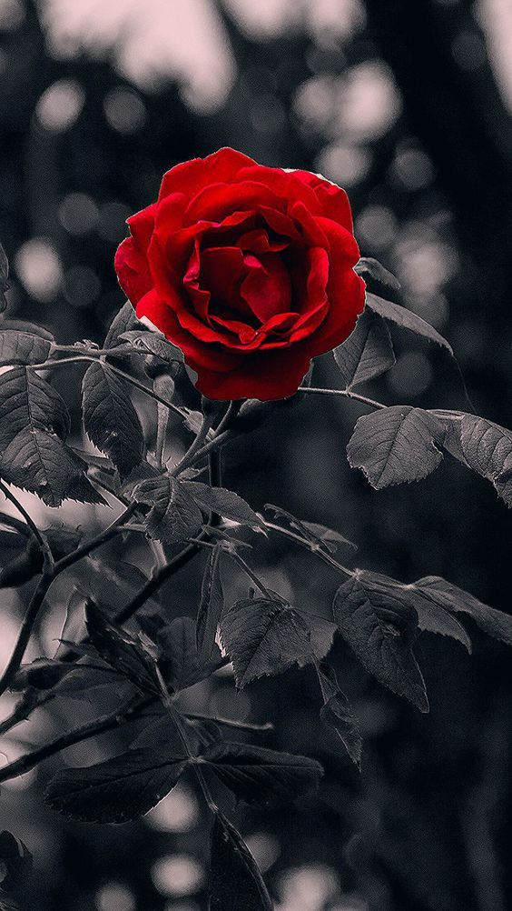

postagem

O Amor!!!
O amor é algo lindo, algo puro, é uma chama que se acende em nossos corações... Clique
02 de Novembro
Dia 02 de novembro, é um dia que acordamos em silêncio!... Clique

Esse projeto de mini blog deu início ao ano de 2022 como uma forma de diversão e distração ao desenvolver textos que podem ser reais ou ficções. Bom, leitor, iremos ao longo desse percurso mergulhar em histórias que confundirão sua mente como: contos de amor, sombrios e etc... ou será mais uma história, contada e esquecida ao logo do tempo? Talvez terá um impacto ou não... Isso tudo vai depender do desenrolar de cada fato que for apresentado no texto. No entanto, estou empolgada para elaborar algo que seja relevante. Mas que fique bem claro: serão apenas histórias desenvolvidas, e não que seja algo para alguém seguir....